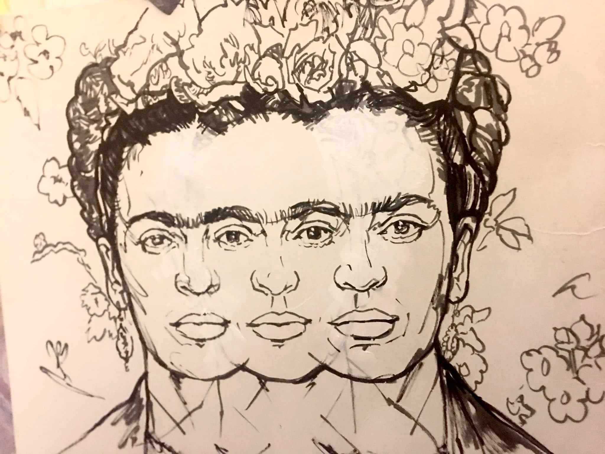
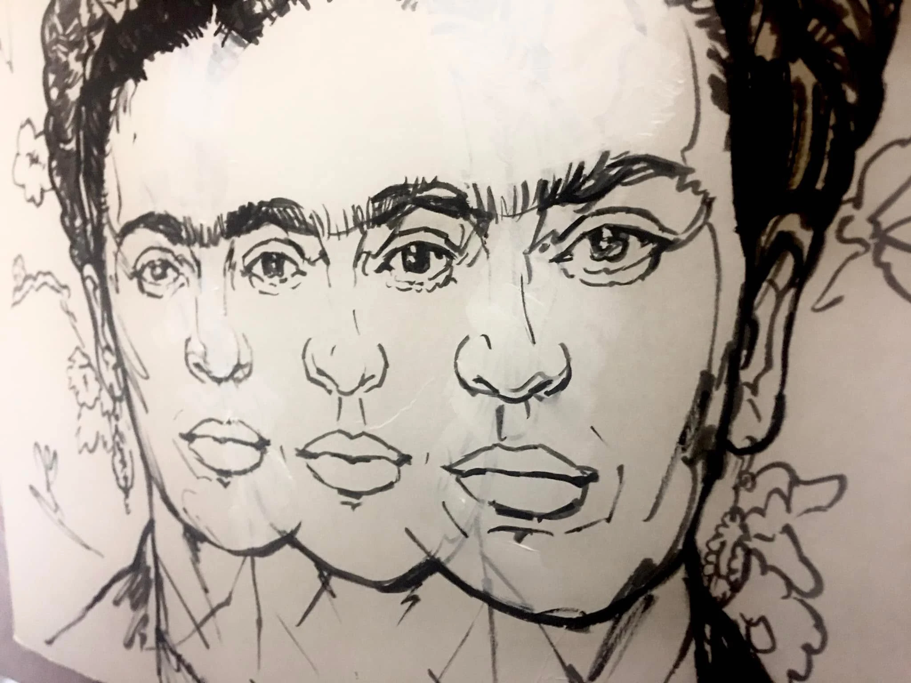

Frida Frida y Frida
2022

About the Artwork
Frida Frida y Frida was created for International Women's Day in 2022. The painting repeats and overlaps Frida Kahlo's portrait three times, developing from an initial black-and-white drawing into layers of color and flowers.
In June 2023, the original painting was raffled to help replace art supplies and studio equipment lost in a fire. The winning collector was announced on July 3, 2023.
From Drawing to Painting
Before the color, flowers and layers of paint, the composition began as a black-and-white drawing. The repeated portrait was already there, establishing the overlapping rhythm that carried into the finished work.


Watch with sound: Instagram
March 8, 2022
Painting Frida
Created for International Women's Day, this short video documents the painting as the repeated portrait develops through layers of color, flowers and paint. The archived version here is presented without music.
A Wider Look
A widescreen view keeps the focus on the painting itself, giving the composition, overlapping portraits and painted surface more room to be seen.
From the Painting
The image eventually moved beyond the original painting and became something people could wear and carry. The same three overlapping portraits now appear on a T-shirt and an all-over-print tote bag.